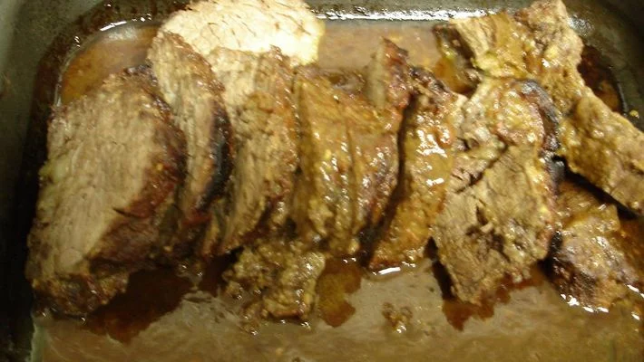

Fraldinha Assada

90 Min
6 Porções
Ingredientes
- 1 peça de fraldinha de mais ou menos 800 g a 1 kg
- 3 colheres de sopa de mostarda
- 2 colheres de sopa de azeite ou óleo
- 1 colher de sopa de mel puro
- 3 dentes (grandes) de alho amassados
- Suco de um limão
- 1 colher de sopa rasa de sal
- 1 colher de sopa rasa de ajinomoto
- 1 folha de loro amassadinha
Opcional:
- 1 pitada de pimenta - do - reino, ou outra de sua preferência
Modo de preparo
- Misturar todos os temperos em um recipiente uma hora antes de temperar a carne.
- Furar bem a fraldinha com uma faquinha fina ou garfo, temperar e deixar marinando por pelo menos umas duas horas, sempre virando a carne para pegar melhor o tempero.
- Assar em forno ou churrasqueira, por uma hora envolvido em papel alumínio.
- Depois retire o papel alumínio e deixe assar até sua preferência.